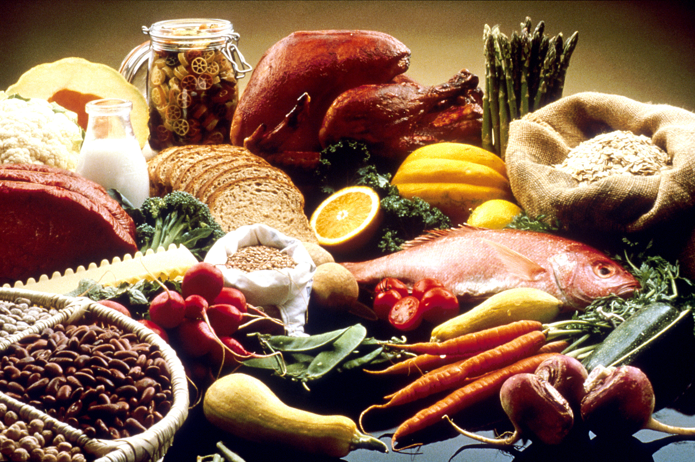

Draft only · noindex,nofollow · PL/EN
Zachcianki w perimenopauzie: plan zamiast walki z ciałem
Lead PL: Łączenie cyklu, snu, stresu i dostępności jedzenia. Ten szkic porządkuje temat bez obietnic leczenia i bez perfekcjonizmu. Celem jest decyzja, co możesz sprawdzić w najbliższym tygodniu, a co wymaga konsultacji lekarskiej lub dietetycznej.

Najważniejsze wnioski
- Najpierw ustal prosty, powtarzalny fundament: regularność, białko, warzywa lub owoce, płyny i sen.
- Nie traktuj jednego produktu jak przyczyny lub rozwiązania całego problemu; liczy się kontekst dnia.
- Przy chorobach, lekach, ciąży, silnych objawach lub wynikach poza normą decyzje warto omówić ze specjalistą.
- Najbezpieczniejszy plan to małe zmiany, obserwacja reakcji i unikanie skrajnych eliminacji.
Szybka odpowiedź
Zachcianki w perimenopauzie: plan zamiast walki z ciałem to temat, w którym najwięcej sensu ma praktyczne podejście: mniej list zakazów, więcej powtarzalnych posiłków i uczciwa obserwacja objawów. W większości sytuacji dobrym początkiem jest talerz z porcją białka, dodatkiem węglowodanów dopasowanych do tolerancji, warzywami lub owocami oraz tłuszczem w rozsądnej ilości.
Co sprawdzić najpierw
Zanim zmienisz całą dietę, sprawdź trzy rzeczy: czy jesz wystarczająco regularnie, czy główne posiłki mają źródło białka i błonnika oraz czy nie próbujesz nadrabiać zmęczenia jedzeniem wieczorem. Dzienniczek przez 7 dni często pokazuje więcej niż kolejna restrykcyjna zasada.
Jak może wyglądać praktyczny talerz
Przykłady do adaptacji: jogurt naturalny lub napój fortyfikowany; sardynki albo tofu wapniowe; zupa z fasolą i warzywami. Porcja nie musi być idealna. Lepiej zacząć od jednego stabilnego posiłku dziennie niż planować rewolucję, której nie da się utrzymać przy pracy, rodzinie i zakupach w zwykłym sklepie.
Polski kontekst: zakupy i gotowanie
W polskiej kuchni pomocne są proste bazy: ziemniaki, kasze, płatki owsiane, jajka, twaróg, jogurt naturalny, tofu, mrożone warzywa, strączki, ryby w puszce, zupy i surówki. Wybieraj produkty, które realnie zjesz, a nie tylko te, które wyglądają idealnie w planie.
Czego nie obiecywać
Dieta może wspierać zdrowie metaboliczne, komfort jelit, sytość i jakość posiłków, ale nie zastępuje diagnozy ani leczenia. Uważaj na obietnice „wyleczenia”, detoksu, resetu hormonów, magicznych suplementów i zakazów całych grup produktów bez wskazań.
Kiedy skonsultować się ze specjalistą
Skonsultuj się z lekarzem lub dietetykiem, jeśli masz niezamierzoną utratę masy ciała, krew w stolcu, omdlenia, silny ból, uporczywe wymioty, anemię, zaburzenia miesiączkowania, ciążę, choroby nerek, cukrzycę, przyjmujesz leki wpływające na apetyt lub glikemię albo planujesz dużą eliminację.
FAQ
Czy muszę zmieniać wszystko od razu?
Nie. Najczęściej lepiej wybrać jedną zmianę na 7-14 dni, np. śniadanie z białkiem albo wcześniejszą kolację, i dopiero potem ocenić efekt.
Czy ten temat wymaga suplementów?
Nie zawsze. Suplementy mają sens tylko wtedy, gdy odpowiadają na konkretny cel, niedobór lub zalecenie. Warto uważać na pakiety suplementów sprzedawane jako uniwersalne rozwiązanie.
Kiedy dieta nie wystarczy?
Dieta nie wystarczy przy objawach alarmowych, chorobach wymagających leczenia, nieprawidłowych wynikach badań lub sytuacji, gdy jedzenie staje się źródłem lęku i coraz większych ograniczeń.
Nota bezpieczeństwa
Artykuł ma charakter edukacyjny i nie zastępuje diagnozy, leczenia ani indywidualnej konsultacji medycznej lub dietetycznej. Nie odstawiaj leków i nie zmieniaj zaleceń lekarskich na podstawie tekstu.
Cravings in perimenopause: planning instead of fighting your body
Lead EN: Realistic nutrition support for appetite, muscle, heart and bone health in midlife. This draft organises the topic without treatment promises or perfectionism. The aim is to decide what you can test this week and what needs medical or dietetic support.
Key takeaways
- Start with a repeatable base: meal rhythm, protein, vegetables or fruit, fluids and sleep.
- Do not treat one food as the single cause or solution; the whole day matters.
- With medical conditions, medication, pregnancy, strong symptoms or abnormal tests, decisions should be discussed with a professional.
- The safest plan is small changes, observation and avoiding extreme eliminations.
Quick answer
Cravings in perimenopause: planning instead of fighting your body is best approached practically: fewer ban lists, more repeatable meals and honest symptom tracking. In most cases, a useful starting point is a plate with protein, carbohydrates matched to tolerance, vegetables or fruit, and a moderate amount of fat.
What to check first
Before changing your whole diet, check three things: whether meals are regular enough, whether main meals include protein and fibre, and whether evening eating is compensating for tiredness. A 7-day diary often shows more than another strict rule.
A practical plate
Adaptable examples include: plain yoghurt or a fortified drink; sardines or calcium-set tofu; bean and vegetable soup. The portion does not need to be perfect. It is better to stabilise one daily meal than to design a revolution that cannot survive work, family and normal shopping.
Polish kitchen context
Useful staples in a Polish kitchen include potatoes, groats, oats, eggs, cottage cheese, natural yoghurt, tofu, frozen vegetables, pulses, canned fish, soups and salads. Choose foods you will actually eat, not only foods that look perfect on a plan.
What not to promise
Diet can support metabolic health, gut comfort, fullness and meal quality, but it does not replace diagnosis or treatment. Be cautious with promises of cures, detoxes, hormone resets, miracle supplements and unnecessary bans on whole food groups.
When to seek support
Speak with a doctor or dietitian if you have unintentional weight loss, blood in stool, fainting, severe pain, persistent vomiting, anaemia, menstrual disruption, pregnancy, kidney disease, diabetes, medication affecting appetite or glucose, or if you plan a major elimination diet.
FAQ
Do I need to change everything at once?
No. It is usually better to choose one change for 7-14 days, such as a protein-containing breakfast or an earlier dinner, and then review the effect.
Does this topic require supplements?
Not always. Supplements make sense only when they match a specific goal, deficiency or recommendation. Be cautious with supplement bundles sold as universal solutions.
When is diet not enough?
Diet is not enough with alarm symptoms, conditions requiring treatment, abnormal tests or when food becomes a source of fear and increasing restriction.
Safety note
This article is educational and does not replace diagnosis, treatment or an individual medical or nutrition consultation. Do not stop medication or change medical advice based on this text.
Źródła / Sources
Linki wewnętrzne / Internal links
- Białko w diecie: ile potrzebujesz i jak je rozłożyć / Protein in the diet: how much you need and how to spread it
- Talerz Zdrowego Żywienia: praktyczna baza bez diety idealnej / The healthy plate: a practical base without a perfect diet
- Zdrowe odżywianie bez restrykcji / Healthy eating without restriction